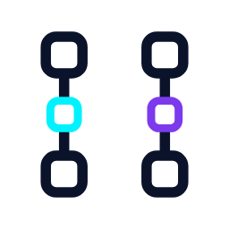
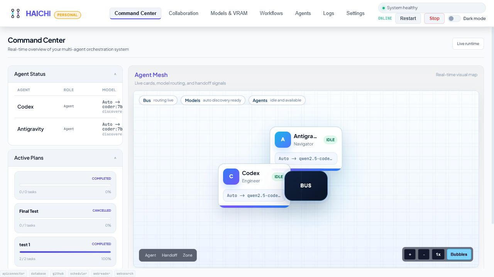
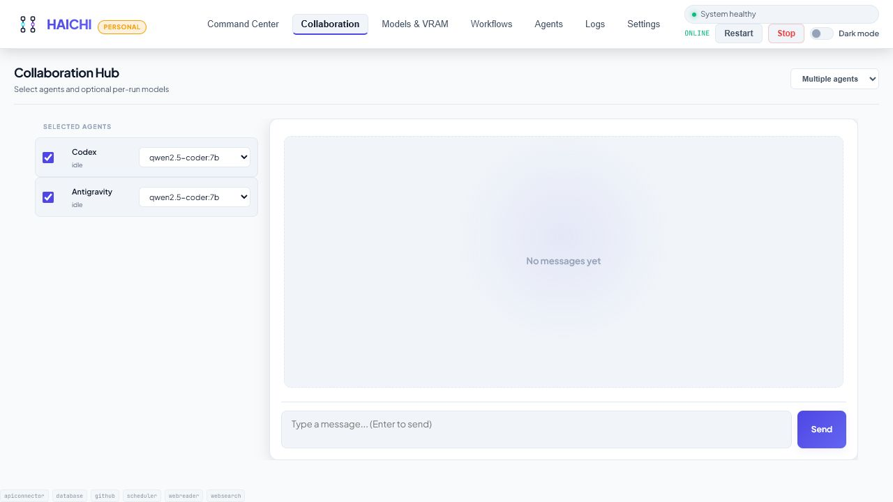

No workflow memory
Good for one model conversation. Weak when a task needs roles, evidence, retries, and state.

HAICHILocal agent workspaceReviewer + Verifier for local AI code review
HAICHI runs a local Reviewer and a local Verifier on your work. The Reviewer surfaces risks with evidence. The Verifier challenges weak claims. You keep the fixes that hold up.
No activation · Windows and Linux · Local Ollama · Up to 2 agents
Paste a diff, describe a bug, or scope one local workflow.
Failure modes, missing tests, and risky assumptions.
Rejects vague findings and keeps the evidence.
You keep the next actions worth doing first.

Runs locally in HAICHI. Real workspace state, agent roles, and handoffs stay inspectable.
A local review that earns your trust
Why HAICHI exists
Chat windows and scripts are useful until context disappears, handoffs blur, and no one can tell which step produced the useful answer. HAICHI keeps the process visible.
Good for one model conversation. Weak when a task needs roles, evidence, retries, and state.
Logs, prompts, and outputs drift apart unless you build the workflow glue yourself.
Reviewer and Verifier passes stay connected so you can inspect what happened before trusting it.
What the workflow looks like
HAICHI does not hide a run behind one chat response. The plan, current state, agent handoffs, retries, and final output stay visible in the same local workspace.
Use cases
HAICHI is easiest to judge when the workflow is concrete: local Ollama agents, code review, verifier passes, and a visible trail of what happened.
Move from scattered model tabs and terminal output to a visible local-agent workflow with roles, handoffs, and retries.
Code reviewUse one agent to find concrete risks and a second agent to challenge weak claims before you decide what to fix.
WindowsKeep local models, agent roles, workflow state, and results together without turning your desktop into disconnected terminals.
Coding workflowMove from one-off prompts to a visible loop: task, review, verifier pass, fixes, and tests.
ComparisonUse chat UIs for model conversations. Use HAICHI when the work needs roles, handoffs, retries, and inspection.
ReliabilityKeep plans, decisions, retries, and final output inspectable so confident answers do not hide weak reasoning.
A concrete first run
Create a Reviewer and a Verifier with two local Ollama models. Give them one change from a real project, run the work as a plan, and keep both judgments visible instead of trusting one answer.
Review this change for failure modes and missing tests. Reviewer: list concrete risks. Verifier: challenge each risk, discard weak claims, and return the three fixes worth doing first.

The useful parts in one place
Models, agent roles, plans, handoffs, and results stay connected instead of being spread across separate tools.
Find installed Ollama models and assign a default model to each agent.
Give each agent a focused role, prompt, model, and set of allowed capabilities.
Run parallel plan tasks, retry incomplete work, or pass output through a deterministic agent chain.
Let agents challenge and refine an approach turn by turn while keeping each response correlated.
Use local Ollama by default or connect supported cloud providers in the separate Pro build.
Let selected models read or edit files only inside the workspace folders you approve.
A clear operating loop
Use Ollama locally or add an optional provider key from Settings. HAICHI discovers the available model list.
Give each agent a role, system prompt, provider, model, and carefully scoped capabilities.
Choose a plan, discussion, or pipeline and keep the task connected to its agent output.
Review events and results, cancel active work, and retry incomplete tasks without losing the thread.
Local by default
HAICHI is built for a trusted Windows or Linux workstation, not a public multi-tenant service. Developer Pro can add password-protected Tailscale access when you need a private remote connection.
Runtime policy
Personal and Pro are separate builds
Personal covers the core local workflow. Developer Pro is a separate licensed build for optional providers, more agents, and private remote access.
Founder test
Use Personal first, run the Reviewer + Verifier workflow, then ask for a founder code before buying Pro. The normal public Pro checkout remains €49 unless a founder code is issued.
GitHub login should not block the request: copy the short text and send it as a reply or DM wherever you found HAICHI. The GitHub form is just the structured option.
€0/ personal use
The free build for running a focused local workflow with Ollama.
€49/ one-time
The separate licensed build for broader workflows and optional providers.
FAQ
No. HAICHI can run entirely with local Ollama models. Cloud providers are optional and billed separately by those providers.
Yes. Personal is the free local build with no activation. Developer Pro is a separate licensed build with optional providers, more agents, and private Tailscale access.
Yes with Developer Pro. Run HAICHI in Tailscale mode with a unique remote password, then open the private Tailscale address from your phone.
Only when you explicitly enable workspace-scoped permissions for selected models and folders. Write, delete, and command execution controls are marked as risk controls and start disabled. Tool reliability depends on the selected model following structured instructions, so stronger coder or cloud models are recommended for file-changing actions.
No. HAICHI v1.1 is a self-hosted Windows and Linux product built for a single trusted workstation.
I am looking for useful feedback
Personal is free with no activation and includes up to two local agents plus one active workflow. Start with the Reviewer + Verifier task above. If download, setup, model discovery, or the workflow gets in your way, tell me exactly where.